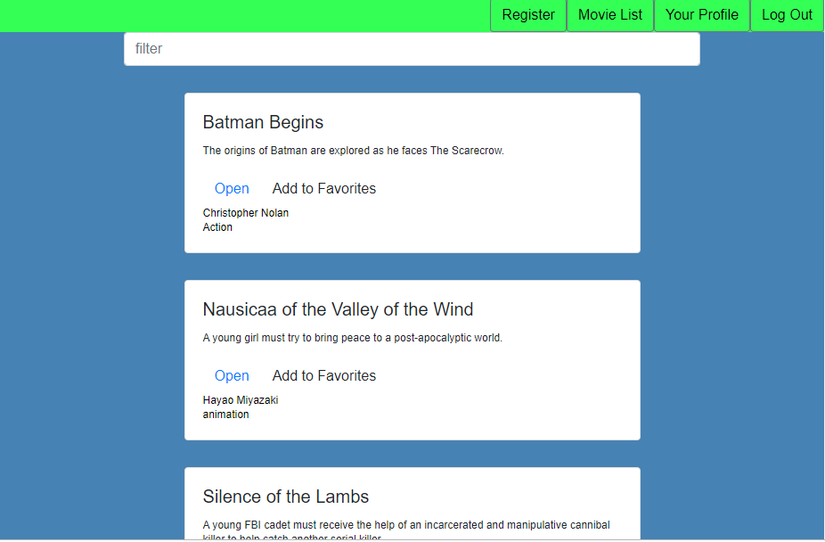
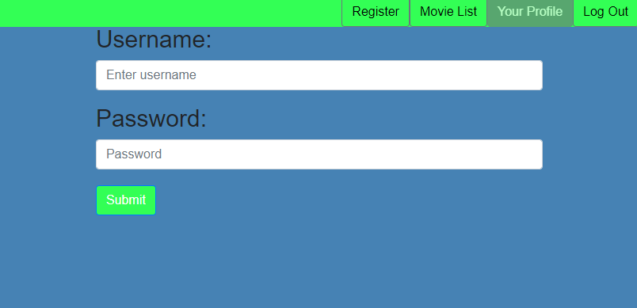

This app was created to showcase my skill with React. It features a database of some of my  favorite movies of all time. Users would be able to log in and look at and interact with a list of movies. This was a project of my own making to learn about the various React tools. The goal of this of this project was to create a React App to learn and later showcase my skill using React as a library.
I first created the back-end logic so that I would have something to show. I then followed the exercises provided by Career Foundry to learn about how to create the front-end.I faced one major obstacle with this project. It took me a long time to figure out how to create the logic for a user to add a movie to their list of favorites. I overcame this by asking for help and trying out various functions. Simply because of this, I was not able to finish this project on my own self-imposed deadline. This project took about 2 months.
I would like to credit William Pei Yuan, a frontend developer and my tutor throughout my Career Foundry course.  His guidance and patience greatly assisted with this project. You can find a link to the finished project here. You may also find other links to other related part of the project here. The first thing that users will be able to do is login and register. After logging in, the user may then look at some details of some of my favorite movies. If a user clicks on the "Your Profile" button, they will see their list of favorites and my update any personal information and even erase themselves from the app should they not want to use the app anymore.